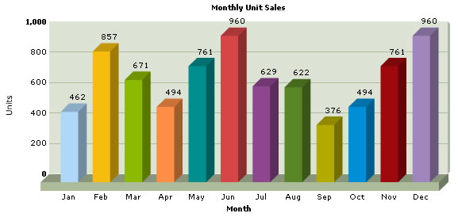
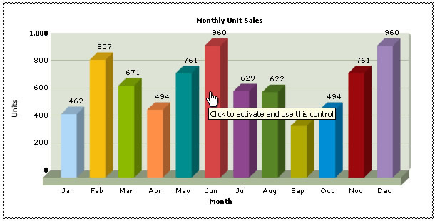

Using FusionCharts with ASP > Basic Examples |
||||||||||||||
FusionCharts can effectively be used with ASP to plot dynamic data-driven charts. In this section, we'll show a few basic examples to help you get started. We'll cover the following examples here:
Let's quickly see each of them. Before you proceed with the contents in this page, we strictly recommend you to please go through the section "How FusionCharts works?". |
||||||||||||||
| All code discussed here is present in Download Package > Code > ASP > BasicExample folder. | ||||||||||||||
| Setting up the charts for use | ||||||||||||||
| In our code, we've used the charts contained in Download Package > Code > FusionCharts folder. When you run your samples, you need to make sure that the SWF files are in proper location. | ||||||||||||||
| Plotting a chart from data contained in Data.xml | ||||||||||||||
Let's now get to building our first example. In this example, we'll create a "Monthly Unit Sales" chart using dataURL method. For a start, we'll hard code our XML data in a physical XML document Data.xml and then utilize it in our chart contained in an ASP Page (BasicChart.asp). First let's have a look at the XML Data document: |
||||||||||||||
| <graph caption='Monthly Unit Sales' xAxisName='Month' yAxisName='Units' decimalPrecision='0' formatNumberScale='0' > <set name='Jan' value='462' color='AFD8F8' /> <set name='Feb' value='857' color='F6BD0F' /> <set name='Mar' value='671' color='8BBA00' /> <set name='Apr' value='494' color='FF8E46' /> <set name='May' value='761' color='008E8E' /> <set name='Jun' value='960' color='D64646' /> <set name='Jul' value='629' color='8E468E' /> <set name='Aug' value='622' color='588526' /> <set name='Sep' value='376' color='B3AA00' /> <set name='Oct' value='494' color='008ED6' /> <set name='Nov' value='761' color='9D080D' /> <set name='Dec' value='960' color='A186BE' /> </graph> |
||||||||||||||
This XML is stored as Data.xml in Data Folder under BasicExample folder. It basically contains the data to create a single series chart to show "Monthly Unit Sales". We'll plot this on a Column 3D Chart. Let's see how to do that. To plot a Chart that consumes this data, you need to include the HTML code to embed a Flash object and then provide the requisite parameters. To make things simpler for you, we've put all this functionality in an ASP function named as renderChartHTML(). This function is contained in Download Package > Code > ASP > Includes > FusionCharts.asp file. So, whenever you need to work with FusionCharts in ASP, just include this file in your page and then you can work with FusionCharts very easily. Let's see it in example. BasicChart.asp contains the following code to render the chart: |
||||||||||||||
| <%@ Language=VBScript %> <HTML> <HEAD> <TITLE>FusionCharts Free- Simple Column 3D Chart</TITLE> </HEAD> 'Adding FusionCharts.asp library file - to use the renderChartHTML() function defined in it. <!-- #INCLUDE FILE="../Includes/FusionCharts.asp" --> <BODY> <% 'Create the chart - Column 3D Chart with data from Data/Data.xml Call renderChartHTML("../../FusionCharts/FCF_Column3D.swf", "Data/Data.xml", "", "myFirst", 600, 300) %> </BODY> </HTML> |
||||||||||||||
As you can see above, we've first included FusionCharts.asp to help us easily create charts. After that, we've simply invoked the renderChartHTML function to render the chart. To this function, you can pass the following parameters (in same order): |
||||||||||||||
|
||||||||||||||
When you now run this page, you'll see a chart like the one below. If you do not see a chart like the one below, please follow the steps listed in Debugging your Charts section of this documentation. |
||||||||||||||
|  | ||||||||||||||
| So, you just saw how simple it is to create a chart using ASP and FusionCharts. Let's now convert the above chart to use dataXML method. | ||||||||||||||
| Changing the above chart into a single page chart using dataXML method | ||||||||||||||
| To convert this chart to use dataXML method, we create another page BasicDataXML.asp in the same folder with following code: | ||||||||||||||
<%@ Language=VBScript %> <% |
||||||||||||||
As you can see above, we:
When you see this chart, you'll get the same results as before. |
||||||||||||||
| Using FusionCharts JavaScript class to embed the chart. | ||||||||||||||
| If you see the charts from previous examples in the latest versions of Internet Explorer, you'll see a screen as below: | ||||||||||||||
|  | ||||||||||||||
Internet Explorer asks you to "Click and activate..." to use the chart. This is happening because of a technical issue in Internet Explorer on part of Microsoft Corporation. As such, all Flash movies need to be clicked once before you can start interacting with them. However, the good news is that there's a solution to it. This thing happens only when you directly embed the HTML code of the chart. It would NOT happen when you use JavaScript to embed the chart. To see how to embed using JavaScript at code level, please see Creating Your First Chart > JavaScript Embedding Section. Again, to make things simpler for you, we've provided an ASP function called renderChart() which helps you wrap this JavaScript function in ASP function, so that you don't have to get entangled with JavaScript, Flash and HTML. This function is contained in the previously used FusionCharts.asp file. Let's now quickly put up a sample to show the use of this function. We create another ASP page SimpleChart.asp to use this function to plot a chart from data contained in our previously created Data.xml file. It contains the following code: |
||||||||||||||
| <%@ Language=VBScript %> <HTML> <HEAD> <TITLE>FusionCharts Free - Simple Column 3D Chart</TITLE> <% 'You need to include the following JS file, if you intend to embed the chart using JavaScript. 'Embedding using JavaScripts avoids the "Click to Activate..." issue in Internet Explorer 'When you make your own charts, make sure that the path to this JS file is correct. Else, you 'would get JavaScript errors. %> <SCRIPT LANGUAGE="Javascript" SRC="../../FusionCharts/FusionCharts.js"></SCRIPT> </HEAD> <!-- #INCLUDE FILE="../Includes/FusionCharts.asp" --> <BODY> <% 'Create the chart - Column 3D Chart with data from Data/Data.xml Call renderChart("../../FusionCharts/FCF_Column3D.swf", "Data/Data.xml", "", "myFirst", 600, 300) %> </BODY> </HTML> |
||||||||||||||
As you can see above, we've:
The renderChart() method takes in the following parameters ( same as renderChartHTML() parameters ) : |
||||||||||||||
|
||||||||||||||
| When you now view the chart, you'll see that no activation is required even in Internet Explorer. |